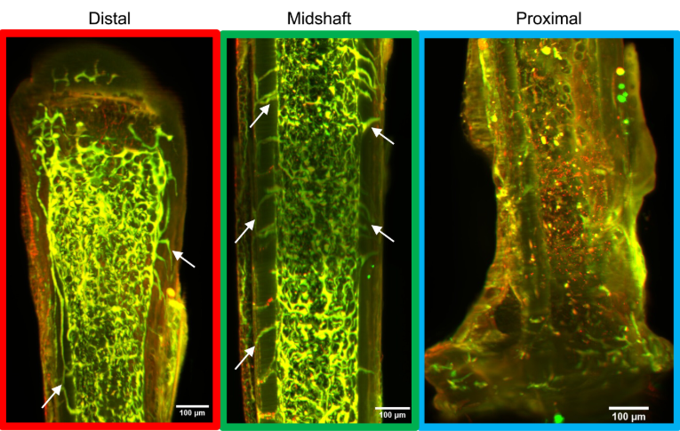
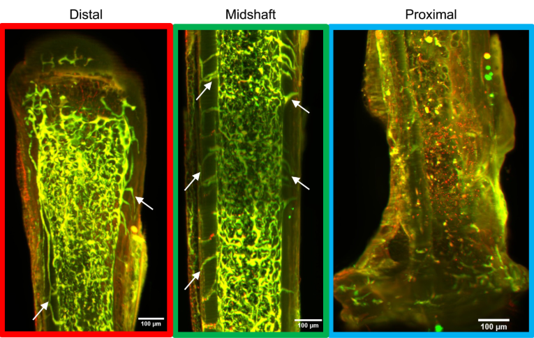
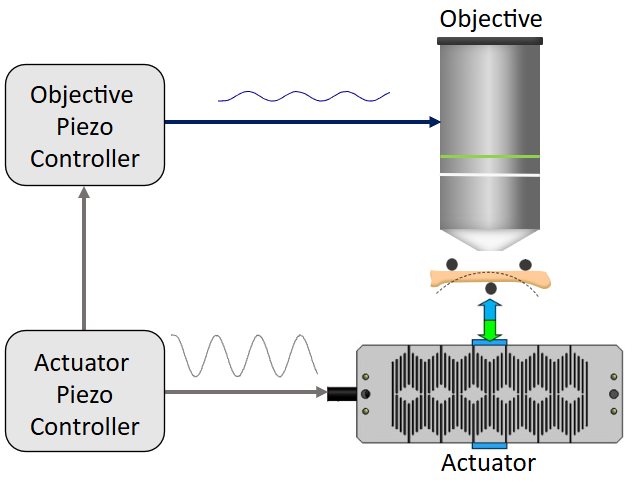

2. BONE AND BRAIN SIGNALING
Institution: Cornell University | Role: Ph.D. Researcher | Published: Biomedical Optics Express, 2024
 

This work introduces a piezo-synchronized imaging technique for removing axial motion artifacts in live bone calcium imaging. The study integrates optical physics, signal processing, and biological validation.
🔹 Research Objectives & Contributions
- Developed real-time motion correction algorithms combining mutual information and correlation-based registration.
- Engineered a piezo-driven imaging setup synchronized with optical acquisition to eliminate depth motion distortions.
- Demonstrated high temporal fidelity calcium signals in vivo, outperforming traditional single-plane tracking methods.
⚡ Technical Highlights
- 🔥 Wrote high-speed acquisition software in MATLAB and Python integrating with Thorlabs and Hamamatsu APIs.
- 💻 Applied signal denoising and multivariate statistical models for calcium trace analysis (PCA, ICA, and clustering).
- 📊 Developed analysis pipelines for batch processing of 3D imaging datasets (>2 TB) with automated segmentation.
🏅 Awards & Recognition
- 🥇 NIH T32 Fellowship for Translational Imaging Research
- 🎖️ Cornell Imaging Innovation Award
- 📚 Best Student Paper at OSA Biophotonics 2023
- Bouchet
- Kappa delta
- Young Investigator Award
- Ford
- NSF - Honorable Mention
⭐ Skills & Tools
MATLAB
Python
ImageJ/Fiji
Signal Processing
Statistical Modeling
Microscopy Instrumentation
🔗 Publications & Links
2. Axial Motion Correction for Multi-Plane Two-Photon Calcium Imaging
Institution: Cornell University | Role: Ph.D. Researcher | Published: Biomedical Optics Express, 2024

This work introduces a piezo-synchronized imaging technique for removing axial motion artifacts in live bone calcium imaging. The study integrates optical physics, signal processing, and biological validation.
🔹 Research Objectives & Contributions
- Developed real-time motion correction algorithms combining mutual information and correlation-based registration.
- Engineered a piezo-driven imaging setup synchronized with optical acquisition to eliminate depth motion distortions.
- Demonstrated high temporal fidelity calcium signals in vivo, outperforming traditional single-plane tracking methods.
⚡ Technical Highlights
- 🔥 Wrote high-speed acquisition software in MATLAB and Python integrating with Thorlabs and Hamamatsu APIs.
- 💻 Applied signal denoising and multivariate statistical models for calcium trace analysis (PCA, ICA, and clustering).
- 📊 Developed analysis pipelines for batch processing of 3D imaging datasets (>2 TB) with automated segmentation.
🏅 Awards & Recognition
- 🥇 NIH T32 Fellowship for Translational Imaging Research
- 🎖️ Cornell Imaging Innovation Award
- 📚 Best Student Paper at OSA Biophotonics 2023
⭐ Skills & Tools
MATLAB
Python
ImageJ/Fiji
Signal Processing
Statistical Modeling
Microscopy Instrumentation
🔗 Publications & Links
Microbiome and Bone Mechanics
My contribution
- 3 conferene talks, find ASBMR video. Marysol conference. K smith conference
- Microscopy setup
- Signal processing
- Data visualization
- Machine learning models
- Python scripting
Review Paper Current OP Reports
paper Bone Reports
paper JBMR